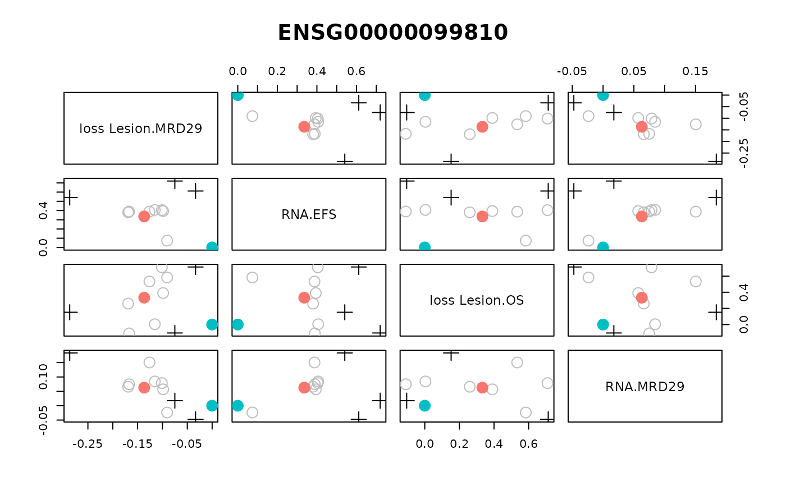

Plot bootstrap output for BEAM sets
plot_beam_boot.Rd#' plot_beam_boot produces a pairs plot of the beam stats matrices. Default is maximum of 5 plots, ordered by most significant association direction.
Usage
plot_beam_boot(
beam.result,
beam.feat.pvals,
beam.specs = NULL,
set.id,
max.plots = 4,
z = TRUE
)Arguments
- beam.result
A beam.stats object from compute_beam_stats
- beam.feat.pvals
A list containing feature-level p-values from compute_feature_pvalues.
- beam.specs
A data.frame. Default NULL, in which case beam.result$beam.specs is used. Otherwise can input other beam.specs data.frame that must contain name, mtx, mdl, plot columns.
- set.id
A character specifying the name of a set. Must be in beam.result$beam.data$set.data
- max.plots
A number specifying the max number of rows in the pairs plot. Default is 4, ordered by feature-level p-value.
- z
Logical indicating whether to z-scale each vector of one coefficient estimate across bootstraps before plotting. Default is TRUE.
Examples
if (FALSE) { # \dontrun{
test.beam.data <- prep_beam_data(main.data=clinf, mtx.data=omicdat,
mtx.anns=omicann, set.data=setdat,
set.anns=NULL, n.boot=10, seed=123)
specs <- prep_beam_specs(beam.data=test.beam.data, endpts=c("MRD29", "EFS"),
firth=TRUE)
test.beam.stats <- compute_beam_stats(beam.data=test.beam.data,
beam.specs=specs)
test.pvals <- compute_set_pvalues(beam.stats=test.beam.stats)
test.feat.pvals <- compute_feature_pvalues(beam.stats=test.beam.stats)
test.boot.plot <- plot_beam_boot(test.beam.stats, test.feat.pvals,
set.id="ENSG00000099810")
} # }
data(beam_stats)
test.pvals <- compute_set_pvalues(beam.stats=beam_stats)
#> Preparing bootstrap results for calculating feature set p-values: Tue Jul 9 15:27:18 2024
#> Finding stats for each data matrix:Tue Jul 9 15:27:18 2024
#> Finding stats for data matrix Lesion: Tue Jul 9 15:27:18 2024
#> Finding features with with Lesion.MRD29 stats: Tue Jul 9 15:27:18 2024
#> Finding features with with Lesion.EFS stats: Tue Jul 9 15:27:18 2024
#> Finding features with with Lesion.OS stats: Tue Jul 9 15:27:18 2024
#> Finding stats for data matrix RNA: Tue Jul 9 15:27:18 2024
#> Finding features with with RNA.MRD29 stats: Tue Jul 9 15:27:18 2024
#> Finding features with with RNA.EFS stats: Tue Jul 9 15:27:18 2024
#> Finding features with with RNA.OS stats: Tue Jul 9 15:27:18 2024
#> Found 120 rows of stats: Tue Jul 9 15:27:18 2024
#> Merging stats with feature-sets: Tue Jul 9 15:27:18 2024
#> Merged feature-set stat rows: 120
#> Ordering and indexing feature sets: Tue Jul 9 15:27:18 2024
#> Cleaning up beam.stat matrices:Tue Jul 9 15:27:18 2024
#> Working on matrix 1 of 6: Tue Jul 9 15:27:18 2024
#> Working on matrix 2 of 6: Tue Jul 9 15:27:18 2024
#> Working on matrix 3 of 6: Tue Jul 9 15:27:18 2024
#> Working on matrix 4 of 6: Tue Jul 9 15:27:18 2024
#> Working on matrix 5 of 6: Tue Jul 9 15:27:18 2024
#> Working on matrix 6 of 6: Tue Jul 9 15:27:18 2024
#> row.start row.end set.id
#> 1 1 3 ENSG00000081760
#> 2 4 6 ENSG00000094914
#> 3 7 12 ENSG00000099810
#> 4 13 15 ENSG00000109576
#> 5 16 18 ENSG00000114771
#> 6 19 21 ENSG00000118017
#> row.start row.end set.id stat.id
#> 1 1 1 ENSG00000081760 RNA.EFS
#> 2 2 2 ENSG00000081760 RNA.MRD29
#> 3 3 3 ENSG00000081760 RNA.OS
#> 4 4 4 ENSG00000094914 RNA.EFS
#> 5 5 5 ENSG00000094914 RNA.MRD29
#> 6 6 6 ENSG00000094914 RNA.OS
#> mtx.row set.id stat.id row.id
#> 63 RNA_ENSG00000081760 ENSG00000081760 RNA.EFS ENSG00000081760
#> 61 RNA_ENSG00000081760 ENSG00000081760 RNA.MRD29 ENSG00000081760
#> 62 RNA_ENSG00000081760 ENSG00000081760 RNA.OS ENSG00000081760
#> 65 RNA_ENSG00000094914 ENSG00000094914 RNA.EFS ENSG00000094914
#> 64 RNA_ENSG00000094914 ENSG00000094914 RNA.MRD29 ENSG00000094914
#> 66 RNA_ENSG00000094914 ENSG00000094914 RNA.OS ENSG00000094914
#> Computing p-value for feature set 1 of 34: Tue Jul 9 15:27:18 2024
#> 13ENSG00000081760
#> Computing p-value for feature set 26 of 34: Tue Jul 9 15:27:18 2024
#> 9496ENSG00000229835
#> Finished computing p-values at: Tue Jul 9 15:27:18 2024
#> Minimum q-value is 0.106439437831269
#> Creating set p-value data frame.
#> Done creating data frame.
#> Creating list for output.
test.feat.pvals <- compute_feature_pvalues(beam.stats=beam_stats)
#> Computing feature p-values for stat matrix 1 of 6: Tue Jul 9 15:27:18 2024
#> This matrix has 20 features.
#> Computing feature p-values for stat matrix 2 of 6: Tue Jul 9 15:27:18 2024
#> This matrix has 20 features.
#> Computing feature p-values for stat matrix 3 of 6: Tue Jul 9 15:27:18 2024
#> This matrix has 20 features.
#> Computing feature p-values for stat matrix 4 of 6: Tue Jul 9 15:27:18 2024
#> This matrix has 20 features.
#> Computing feature p-values for stat matrix 5 of 6: Tue Jul 9 15:27:18 2024
#> This matrix has 20 features.
#> Computing feature p-values for stat matrix 6 of 6: Tue Jul 9 15:27:18 2024
#> This matrix has 20 features.
test.boot.plot <- plot_beam_boot(beam_stats, test.feat.pvals,
set.id="ENSG00000099810")
